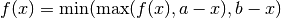
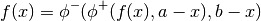
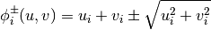

Functions to solve nonlinear equations and complementarity problems
Find roots by bisection
| Parameters : | f : function a : array
b : array
tol : float
|
|---|---|
| Returns : | x : array
|
Fixed point function iteration
| Parameters : | f : function
x : array
tol : float, optional
maxit : int, optional
|
|---|---|
| Returns : | info : integer
relres : float
t : int
gval : array
|
Max-min transformation
| Parameters : | f : function
x : ndarray, shape (n, ) a : ndarray, shape (n, ) b : ndarray, shape (n, ) |
|---|---|
| Returns : | fhatval : ndarray, shape (n, )
fhatjac : ndarray
|
Notes
Function is

This function is used in complementarity problems.
Solve nonlinear complementarity problem
| Parameters : | f : function
|
|---|---|
| Returns : | x : ndarray, shape (n, )
|
orall i = 1, dots, n
Fischer’s function
| Parameters : | f : function
x : ndarray, shape (n, ) a : ndarray, shape (n, )
b : ndarray, shape (n, )
|
|---|---|
| Returns : | fxnew : ndarray, shape (n, )
jnew : ndarray, shape (n, )
|
Notes
Fischer’s function is defined as

where

It is commonly used in rootfinding for complementarity problems. It has the same roots as
but is smoother, and thus has fewer numerical problems.